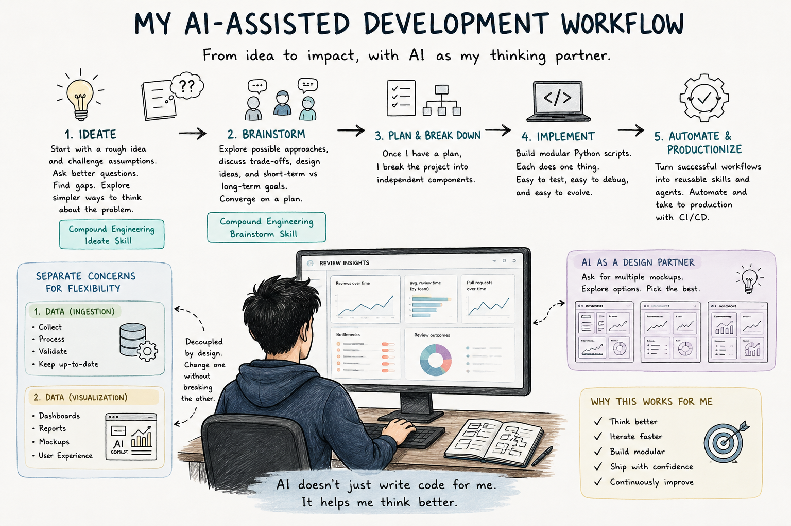
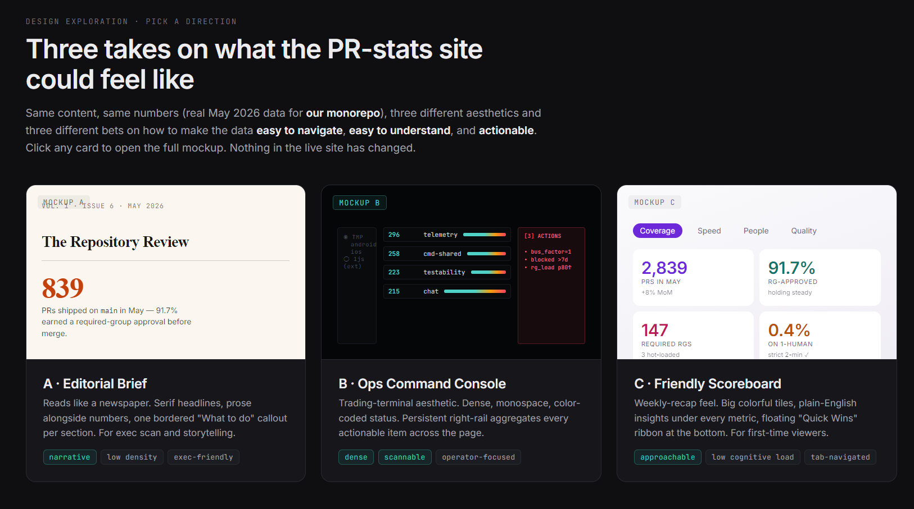
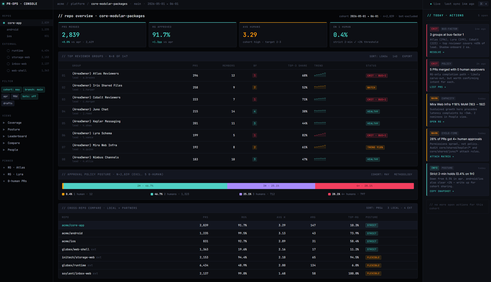
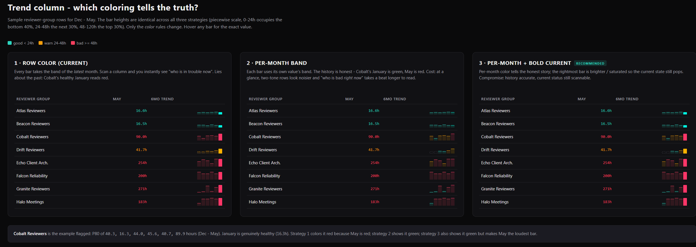

The Workflow I've Settled On for AI-Assisted Development

Whenever I start a new project these days, Copilot is usually involved from day one.
Like many engineers, I initially approached tools like Copilot and Claude as code generators. During those times, I was yet to see LLMs as an "engineer" and more as "IntelliSense on steroids."
What I didn't expect was that the biggest productivity gains would come (at least for me) from having a sounding board to bounce ideas off of and get more viewpoints on the work I do.
When I have an idea for a feature, I usually begin with a rough description of the problem and use Compound Engineering's Ideate skill to challenge my assumptions. Most of the time, I end my prompt with, "Is there a simpler way to think about the problem?" Most of the time, the first version of the idea isn't the one I end up building, but the back-and-forth helps refine the problem, helps me find critical gaps in my thinking, and forces me to gather more information about the problem.
I use Compound Engineering's Ideate skill for this.
Once I feel I understand the problem well enough, I switch to Brainstorming (another skill, Brainstorm, but this ends up eating a lot of tokens). I discuss possible approaches, design ideas, and what my short-term and long-term goals might be for implementing this feature.
Once I have a plan, I tend to break the project into independent components.
Recently, I was building a system to provide visibility into our code review process and identify review bottlenecks across engineering teams.
Before writing any UI, I separated the problem into two parts:
- Generating and maintaining the data (data ingestion).
- Presenting the data (data visualization).
This separation has become a recurring pattern in almost everything I build. Keeping those concerns separate gives me a lot of flexibility.
I can redesign the user experience entirely without touching the underlying data pipeline. Likewise, I can improve the data processing logic without worrying about breaking the UI.
Most of these systems start as a collection of small Python scripts and eventually end up being full-fledged, production-ready services (with a small amount of effort being put into productionizing these scripts via automation such as CI).
Frontend design is probably where Copilot surprises me the most. I don't come from a frontend background, which means I often know what information I want to show, but not necessarily the best way to present it. Instead of asking for a specific layout, I usually ask Copilot to generate multiple mockups for the same page.
The interesting part is that the model often proposes layouts I wouldn't have considered myself. Looking at multiple designs side by side forces me to think about the user experience rather than the implementation details.
For the Review Insights project, this approach led to a dashboard design that was significantly better than my original idea.
Here are some sample layouts I got from Copilot:



As projects mature, I try to turn successful workflows into reusable skills and agents. For example, I have six skills responsible for data population and another focused entirely on visualization.
I spend less time fighting boilerplate and more time thinking about the problem, evaluating alternatives, and refining ideas.
And even though I sometimes feel scared of AI, I do like how it empowers me to think more and complements me in new areas.